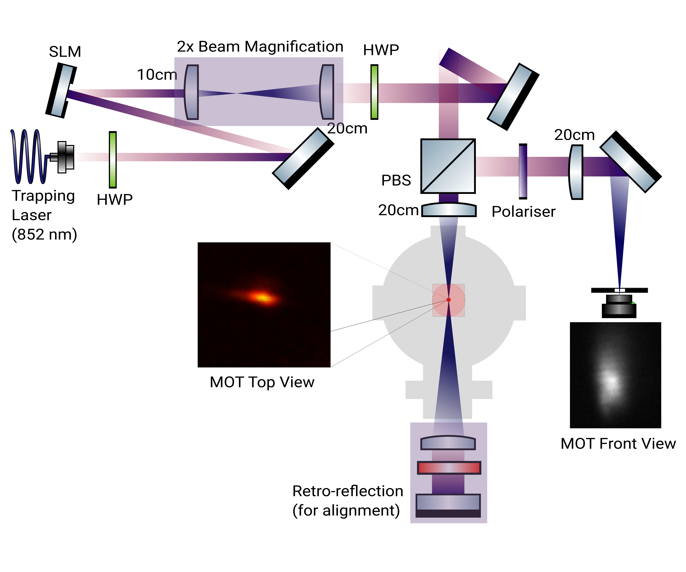

Stage 01 · Context
The Hubbard model for cold atoms
Term project at NISER (March–April 2026), advised by Anamitra Mukherjee, on the Hubbard model and its realization with ultracold atoms.
A term project on the Hubbard model: how it behaves in a trapping potential, and how its structures could be seen in ultracold-atom experiments.
Stage 01 · Context
Term project at NISER (March–April 2026), advised by Anamitra Mukherjee, on the Hubbard model and its realization with ultracold atoms.
Stage 02 · Method
The Hubbard model was studied both analytically and numerically, using the mean-field approximation for a quadratic trapping potential.
Stage 03 · Simulation
The system was simulated to arrive at the wedding-cake and insulator shell structures, together with the localized wavefunctions of the same.


Stage 04 · Observables
The corresponding experimental signatures were worked out for: